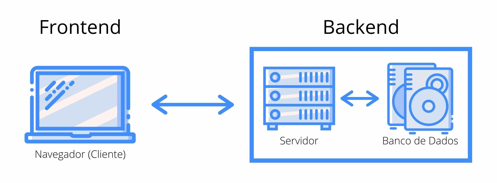

FRONTEND
 Frontend es la parte de un sitio web que interactúa con los usuarios, por eso decimos que está del lado del cliente. Backend es la parte que se conecta con la base de datos y el servidor que utiliza dicho sitio web, por eso decimos que el backend corre del lado del servidor. Estos dos conceptos explican a grandes rasgos cómo funciona un sitio o aplicación web y son fundamentales para cualquier persona que trabaje en el mundo digital. Frontend es la parte de un programa o dispositivo a la que un usuario puede acceder directamente. Son todas las tecnologías de diseño y desarrollo web que corren en el navegador y que se encargan de la interactividad con los usuarios. Los desarrolladores frontend son aquellos que crean los componentes visuales de un sitio web. Dan formato a las imágenes, la animación y la interactividad de un sitio web. El desarrollo de front-end es el proceso de hacer que un sitio web funcione y se vea bien en un navegador. Por lo general, lo hacen diseñadores y desarrolladores, a veces con aportes del personal de marketing. Los desarrolladores front-end pueden codificar en HTML, CSS y JavaScript para integrar el diseño del cliente con una aplicación, o pueden trabajar con frameworks como AngularJS.El desarrollo de back-end es el proceso de administrar el almacenamiento de datos y acceder a los datos de una base de datos para mostrarlos en una página web para que los usuarios puedan consumirlos en cualquier dispositivo.